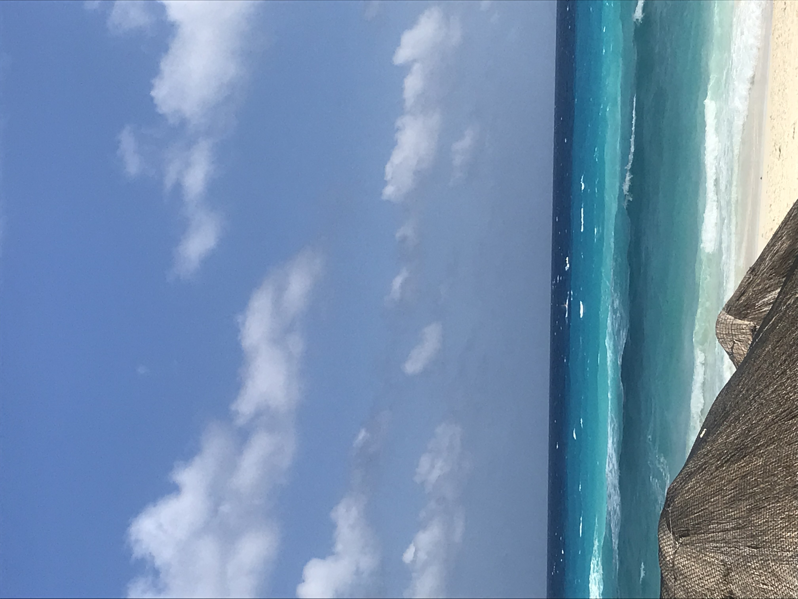
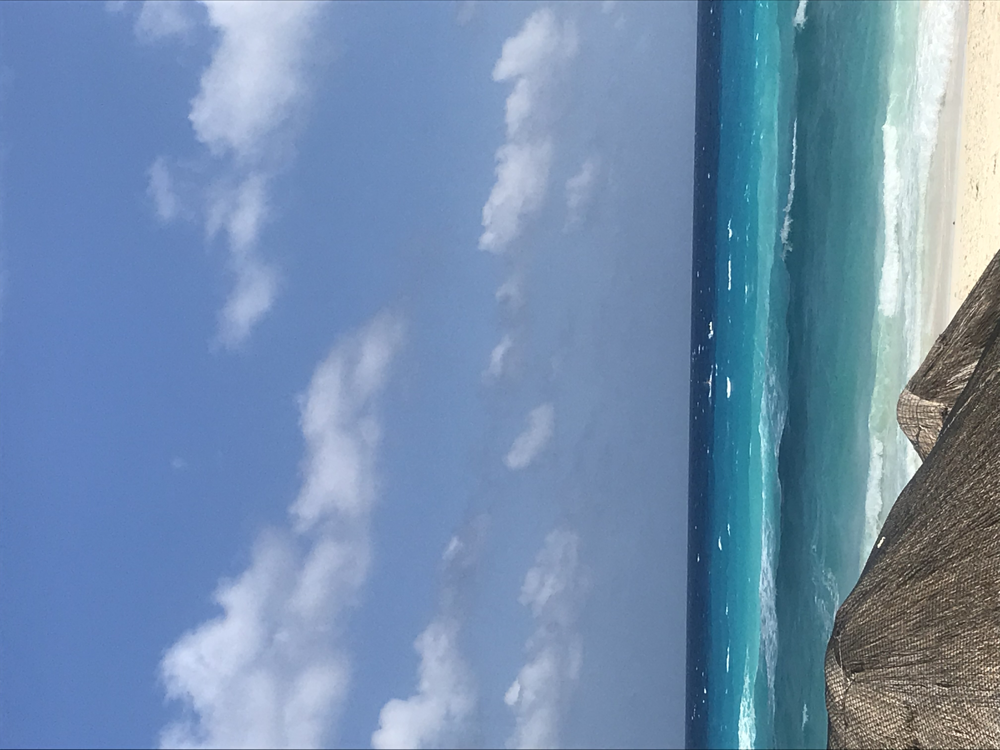

Hello!! I am Maya. Welcome to my page of travels. Here you will see places I have traveled to in the past couple years. I hope I can go to more exotic places in the future and maybe live somewhere one day! I have been to Costa Rica, Barcelona, and Cancun before the pandemic. I am excited to travel even more!!
All of the photos pictured are from my camera roll. I love photographing the new foods I have tried as well as the beautiful landscapes. While a picture doesn't truly grasp the quality of the moment, it helps remember! I hope you enjoy!